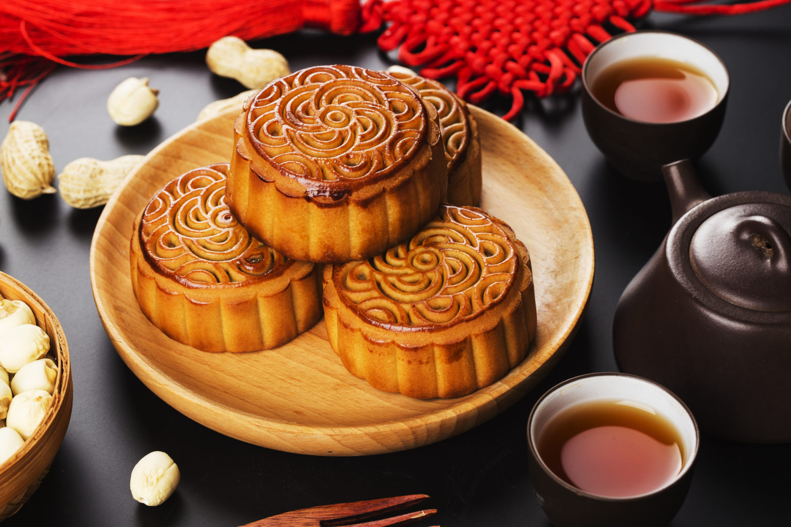

ประวัติวันไหว้พระจันทร์
วันไหว้พระจันทร์ เป็นเทศกาลสำคัญที่จะมีจัดขึ้นทุกๆเดือนกันยายน โดยเป็นเทศกาลสำคัญที่ตรงกับช่วงฤดูกาลใบไม้ร่วงของจีน โดยมีจุดมุ่งหมายคือการเก็บเกี่ยวพืชผล การแสดงความเคารพต่อพระจันทร์ เป็นวันสำคัญของครอบครัว โดยประภาณีเหล่านี้ก็ได้มีกันมาอย่างยาวนานหลายปี แต่สิ่งที่สำคัญไม่แพ้กันนั้นก็คือ ขนมไหว้พระจันทร์ ที่มักจะเป็นของคู่กันสำหรับเทศกาลนี้ แล้วทำไมถึงต้องมีไปหาคำตอบพร้อมๆกันได้เลยครับ
วันไหว้พระจันทร์ คืออะไร?
วันไหว้พระจันทร์ มีอีกชื่อเรียกว่า “จงชิวเจี๋ย” (中秋节) (Mid Autumn Festival) คือ เทศกาลสำคัญของประเทศจีน ที่จะเกิดขึ้นต่อจากวันสารทจีน (ช่วงสิงหาคม) โดยประเพณีนี้จะจัดขึ้นในช่วงฤดูใบไม้ร่วง ประมาณเดือนกันยายนพอดี ตามปฏิทินจันทรคติจะยึดตามวันขึ้น 15 ค่ำเดือน 8 เป้นหลัก โดย จงชิวเจี๋ย จัดขึ้นเพื่อเฉลิมฉลองและขอบคุณพระจันทร์ เพราะชาวจีนสมัยก่อน เชื่อว่าพระจันทร์นั้นมีผลต่อการเกิดน้ำขึ้นน้ำลงและทำให้ผลผลิตทางการเกษตรที่ชาวนาได้เพราะปลูกมีความอุดมสมบูรณ์ จึงได้มีการจัดงานเฉลิมฉลองขึ้นมา
นอกจากการเฉลิมฉลองผลผลิตของชาวนาแล้ว วันไหว้พระจันทร์ยังถือว่าเป็นวันสำคัญสำหรับครอบครัว เพราะว่าในวันดังกล่าวนั้นจะเป็นวันเดือนเพ็ญซึ่งพระจันทร์จะมีลักษณะทรงกลมเต็มดวง หากแปลความหมายออกมาก็จะสื่อความหมายถึงความสามัคคี โดยครอบครัวก็มักจะใช้เวลานี้มาพบปะและอยู่ร่วมกันพร้อมหน้าพร้อมตา แบ่งขนมมาทานกัน ประดับบ้านให้สวยงาม และทำกิจกรรมร่วมกันอย่างมีความสุข
เทพเยว่ห์เหล่า วันไหว้พระจันทร์ 2565
นอกจากการเฉลิมฉลองผลผลิต เป็นวันสำหรับครอบครัว วันไหว้พระจันทร์ก็เป็นวันสำหรับชาว สายมู อย่างแท้จริงเพราะว่าชาวจีนมีความเชื่อเกี่ยวกับเทพเจ้าที่มีความเกี่ยวข้องกับพระจันทร์ โดยจะมาขอพรและรำลึกถึงเทพเจ้าองค์ต่างๆ
นอกจากการเฉลิมฉลองผลผลิต เป็นวันสำหรับครอบครัว วันไหว้พระจันทร์ก็เป็นวันสำหรับชาว สายมู อย่างแท้จริงเพราะว่าชาวจีนมีความเชื่อเกี่ยวกับเทพเจ้าที่มีความเกี่ยวข้องกับพระจันทร์ โดยจะมาขอพรและรำลึกถึงเทพเจ้าองค์ต่างๆ
ทำไมวันไหว้พระจันทร์ ถึงต้องมี ขนมไหว้พระจันทร์?
ทุกๆเดือนกันยายน (หรือปลายเดือนสิงหาคม) หลายบ้านก็จะเริ่มหาขนมไหว้พระจันทร์มาไหว้พระจันทร์ โดยประเพณีการไหว้พระจันทร์ด้วยขนมไหว้พระจันทร์ เป็นการไหว้สิ่งศักดิ์สิทธิ์ เพียงปีละครั้งเดียวเท่านั้น โดยหลังจากมีการไหว้เสร้จแล้วก็จะนำขนมมาแบ่งปันกันรับประทาน โดยจะแบ่งญาติ พี่น้อง ครอบครัว เพื่อนบ้าน และก็มีการพบปะสังสรรค์ และเฉลิมฉลองไปด้วยกัน
โดย ขนมไหว้พระจันทร์ ภาษาจีนจะมีชื่อเรียกว่า เย่ว์ปิ่ง จะมีลักษณะเป็นทรงกลมให้มีความคล้ายกับ ดวงจันทร์ ซึ่งคำว่า เย่ คือพระจันทร์และปิ้ง คือขนมที่มีรูปทรงแบน แล้วนำมาปิ้ง ย่าง เผา หรือ อบ แต่อันที่จริงแล้วขนมไหว้พระจันทร์ที่เราเห็นกันทุกวันนี้นั้นมีจุดเริ่มต้นมาตั้งแต่ช่วงสมัยของ พระเจ้าถังเกาจู่ กำลังครองราชย์ตั้งแต่ พ.ศ. 1161 – 1169 ซึ่ง พระเจ้าถังเกาจู่กำลังท้องพระโรงในยามราตรี ในขณะนั้นเองก็มีพ่อค้าชาวธิเบตนำขนมปิ้งที่มีลวดลายสวยงามมาให้ได้ลองชิม ซึ่งพ่อค้าชาวธิเบต ก็ได้นำขนมนี้มาแบ่งปันกับขุนนางทุกคน ก่อนที่ประเพณีจะกระจายวงกว้างมากยิ่งขึ้น และทำให้เกิดขนมไหว้พระจันทร์ และประเพณีการรับประทานขึ้นมา
ตำนานของขนมไหว้พระจันทร์ก็ยังมีอีกหนึ่งเรื่องเล่าที่มีความเกี่ยวข้องกัน โดยเรื่องเล่านี้เกิดขึ้นในสมัยราชวงศ์หยวน โดยในช่วงนั้นมองโกลมีอิทธิพลปกครองดินแดนของจีน ซึ่งรวมไปถึงวัฒนธรรมการไหว้พระจันทร์ โดยในช่วงนั้นชาวจีนส่วนมากไม่พอใจกับการกระทำของมองโกล ที่มีความทารุณ โหดร้าย ซึ่งนายหลิวปั๋วเวิน นักยุทธศาสตร์ทหารของจีนได้วางกลอุบาย เพื่อต่อต้านมองโกล ด้วยการนำกระดาษเขียนข้อความนัดหมายและกระจายข่าวใส่กระดาษ เพื่อสร้างการปฏิวัติ ในคืนวันเพ็ญเดือนแปด จึงทำให้การปกครองมองโกลถูกล้มล้างไปได้ในที่สุด
โดย ขนมไหว้พระจันทร์ ภาษาจีนจะมีชื่อเรียกว่า เย่ว์ปิ่ง จะมีลักษณะเป็นทรงกลมให้มีความคล้ายกับ ดวงจันทร์ ซึ่งคำว่า เย่ คือพระจันทร์และปิ้ง คือขนมที่มีรูปทรงแบน แล้วนำมาปิ้ง ย่าง เผา หรือ อบ แต่อันที่จริงแล้วขนมไหว้พระจันทร์ที่เราเห็นกันทุกวันนี้นั้นมีจุดเริ่มต้นมาตั้งแต่ช่วงสมัยของ พระเจ้าถังเกาจู่ กำลังครองราชย์ตั้งแต่ พ.ศ. 1161 – 1169 ซึ่ง พระเจ้าถังเกาจู่กำลังท้องพระโรงในยามราตรี ในขณะนั้นเองก็มีพ่อค้าชาวธิเบตนำขนมปิ้งที่มีลวดลายสวยงามมาให้ได้ลองชิม ซึ่งพ่อค้าชาวธิเบต ก็ได้นำขนมนี้มาแบ่งปันกับขุนนางทุกคน ก่อนที่ประเพณีจะกระจายวงกว้างมากยิ่งขึ้น และทำให้เกิดขนมไหว้พระจันทร์ และประเพณีการรับประทานขึ้นมา
ตำนานของขนมไหว้พระจันทร์ก็ยังมีอีกหนึ่งเรื่องเล่าที่มีความเกี่ยวข้องกัน โดยเรื่องเล่านี้เกิดขึ้นในสมัยราชวงศ์หยวน โดยในช่วงนั้นมองโกลมีอิทธิพลปกครองดินแดนของจีน ซึ่งรวมไปถึงวัฒนธรรมการไหว้พระจันทร์ โดยในช่วงนั้นชาวจีนส่วนมากไม่พอใจกับการกระทำของมองโกล ที่มีความทารุณ โหดร้าย ซึ่งนายหลิวปั๋วเวิน นักยุทธศาสตร์ทหารของจีนได้วางกลอุบาย เพื่อต่อต้านมองโกล ด้วยการนำกระดาษเขียนข้อความนัดหมายและกระจายข่าวใส่กระดาษ เพื่อสร้างการปฏิวัติ ในคืนวันเพ็ญเดือนแปด จึงทำให้การปกครองมองโกลถูกล้มล้างไปได้ในที่สุด
ไส้ในขนมไหว้พระจันทร์นั้น เดิมที่จะเป็นไส้ที่มาจากธัญพืช เนื้อของผลไม้กวน อาทิ ทุเรียน เหล็ดบัว หรือ ถั่วประเภทต่างๆ โดยในปัจจุบันไส้ก็เริ่มมีความหลากหลายมากยิ่งขึ้นทั้งการเพิ่มเนื้อสัตว์ลงไป หรือ ใส่ไส้ของเมนูที่กำลังเป็นที่นิยมในปัจจุบัน อาทิ ชาเขียว ช็อกโกแล็ต หรือ สตรอเบอรี่ เป็นต้น ถึงแม้ว่าในเรื่องของไส้เป้นสิ่งที่สามารถเลือกได้อย่างหลากหลาย แต่สิ่งที่สำคัญก็คือการไหว้พระจันทร์ เพราะเป็นขั้นตอนที่สำคัญและต้องทำในช่วงเวลาที่ถูกต้อง แล้วจะมีวิธีอย่างไรมาติดตามกันต่อได้เลยครับ
ไหว้พระจันทร์ มีวิธีในการไหว้อย่างไรบ้าง

สำหรับการไหว้พระจันทร์ จะมีการบูชาที่ไม่ต่างจากการไหว้สิ่งศักดิ์สิทธิ์ทั่วไปมากนัก โดยส่วนมากมักจะนิยมไหว้พระจันทร์ใน ช่วงตะวันตกดิน หรือ ช่วงที่สามารถมองเห็นพระจันทร์บนท้องฟ้าได้ และสถานที่ก็อาจจะเป้นลานกว้างๆหน้าบ้าน หรือ บนดาดฟ้าก็ได้เช่นเดียวกัน
โดยการเตรียมตัวจะต้องจัดทุกอย่างให้พร้อมก่อนเริ่มเข้าหัวค่ำ หรือ ช่วงที่พระจันทร์สูงเกินขอบฟ้า และจะต้องเก็บของทุกอย่างให้เรียบร้อยหลังเทียนดอกใหญ่มอดดับลง ทั้งนี้เนื่องจากเป็นพิธีที่มีความเกี่ยวข้องกับไฟ ดังนั้นหลังทำพิธีจะต้องเช็คก่อนนำของที่ทำพิธีเสร็จแล้วไปทิ้งที่ถังขยะ ว่ายังคงมีไฟติดอยู่หรือไม่เพื่อป้องกันอัคคีภัยที่จะเกิดขึ้นตามมาในภายหลัง
ขอขอบคุณข้อมูลจาก
https://blog.hungryhub.com/วันไหว้พระจันทร์-2566/
https://www.snpfood.com/th/products/bakery/moon-cake
โดยการเตรียมตัวจะต้องจัดทุกอย่างให้พร้อมก่อนเริ่มเข้าหัวค่ำ หรือ ช่วงที่พระจันทร์สูงเกินขอบฟ้า และจะต้องเก็บของทุกอย่างให้เรียบร้อยหลังเทียนดอกใหญ่มอดดับลง ทั้งนี้เนื่องจากเป็นพิธีที่มีความเกี่ยวข้องกับไฟ ดังนั้นหลังทำพิธีจะต้องเช็คก่อนนำของที่ทำพิธีเสร็จแล้วไปทิ้งที่ถังขยะ ว่ายังคงมีไฟติดอยู่หรือไม่เพื่อป้องกันอัคคีภัยที่จะเกิดขึ้นตามมาในภายหลัง
ขอขอบคุณข้อมูลจาก
https://blog.hungryhub.com/วันไหว้พระจันทร์-2566/
https://www.snpfood.com/th/products/bakery/moon-cake